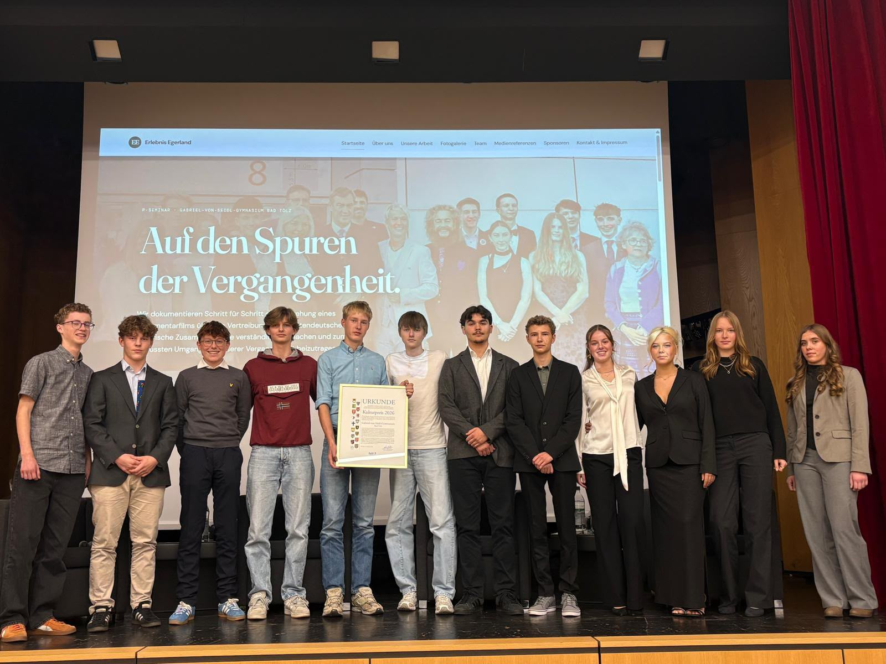

Abenteuer Heimatland · Unser neues P-Seminar
Isergebirge
im Wandel
der Zeit.
Ein Gebirge, viele Geschichten.
Unser Abenteuer Heimatland beginnt.
Ein neues Kapitel
Geschichte entdecken.
Menschen begegnen.
Wir sind das neue P-Seminar Geografie am Gabriel-von-Seidl-Gymnasium Bad Tölz. Mit „Isergebirge im Wandel der Zeit“ beginnt für uns eine gemeinsame Spurensuche: Wir möchten die Region, ihre Geschichte und die Menschen kennenlernen, die sie geprägt haben und heute mitgestalten.
Was verändert sich im Laufe der Zeit? Was bleibt in Erinnerung? Und was bedeutet Heimat für die Menschen vor Ort? Diese Fragen begleiten unser Projekt. Auf dieser Website nehmen wir euch Schritt für Schritt mit – von den ersten Ideen bis zu unseren Begegnungen und Ergebnissen.
Mehr über unser Seminar ↗Unser Auftakt
Ein Abend voller
neuer Eindrücke.

Zum Auftakt unseres eigenen Projekts durften wir die Filmpremiere des vorigen Seminars „Unterwegs im Egerland“ besuchen. Dabei haben wir spannende Einblicke in dessen Arbeit gewonnen, viele neue Menschen kennengelernt und wertvolle Eindrücke für unser eigenes P-Seminar gesammelt.
Der Abend hat uns gezeigt, wie viel aus einer gemeinsamen Idee entstehen kann. Jetzt freuen wir uns darauf, unsere eigenen Fragen zu stellen und die Geschichten des Isergebirges zu entdecken.